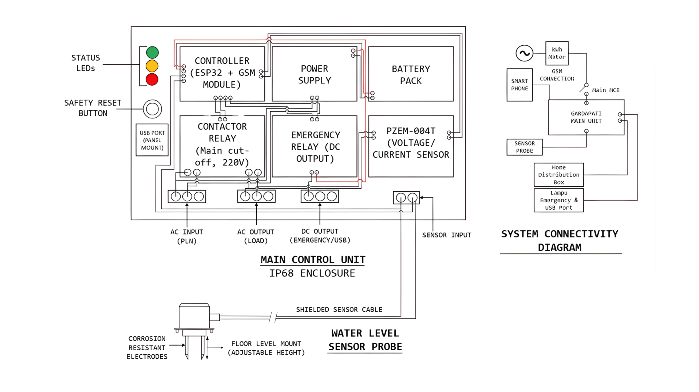
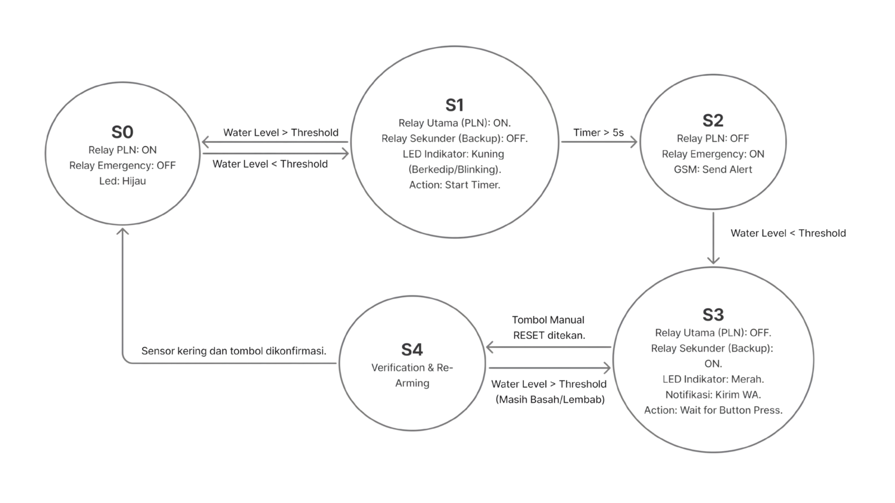
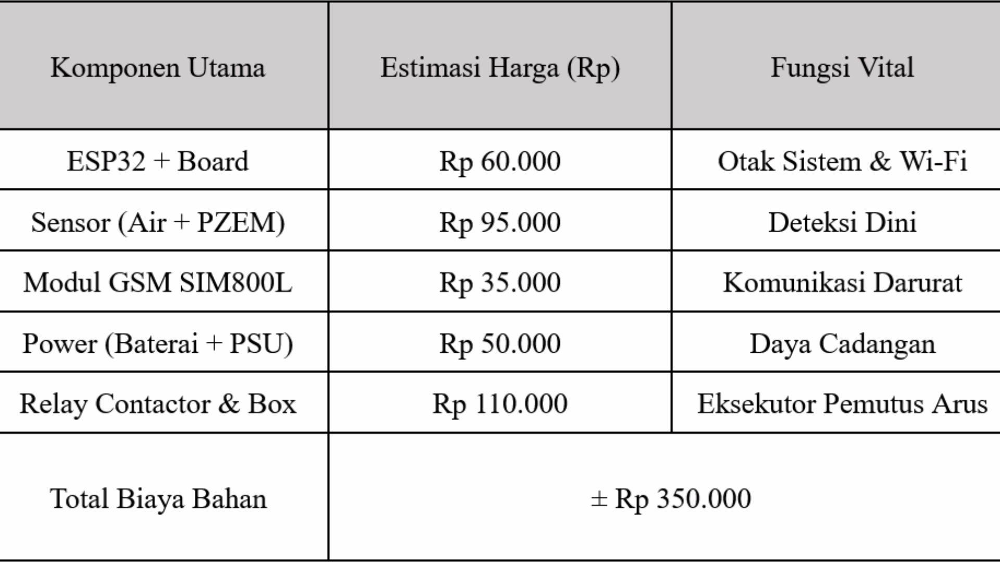
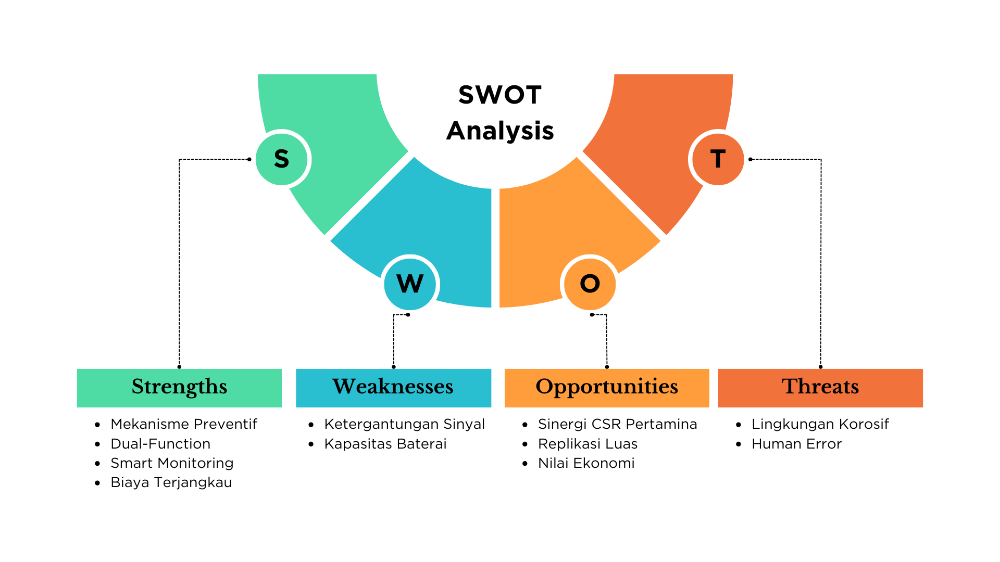
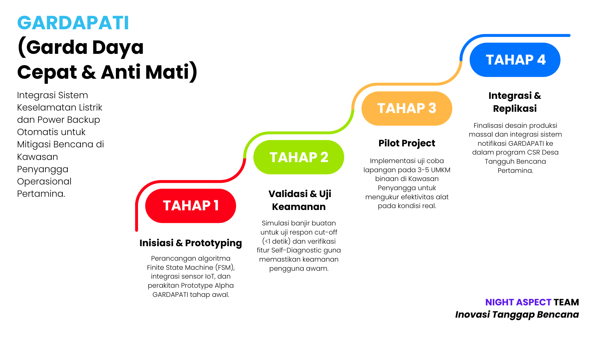

The Mission: Gardapati
"Gardapati (Garda Daya Cepat & Anti Mati)" represents a critical disaster mitigation innovation. Developed by Team NIGHT ASPECT for the Pertama Eco-Innovation Competition 2026, this system offers a holistic solution to a persistent environmental hazard in industrial buffer zones. Our team, comprised of four specialists across Electrical Engineering (Unpad), Actuarial Science (ITB), and Informatics (Telkom), focused on developing a proposal for a preventative system that integrates electrical safety with automatic power backup.
The Context: Persistent Tidal Flooding
The Integrated Terminal area in Tanjung Mas faces an unrelenting challenge from tidal flooding, or "rob." Research indicates that the abrasion rate in this region has reached extreme levels, with coastline loss averaging 13.58 meters per year between 2001 and 2021. This rapid erosion accelerates seawater intrusion into residential areas and SME operational zones.
Crucially, this flooding significantly increases the risk of secondary disasters, specifically electrical hazards and fires. When floodwaters submerge conventional electrical systems, standard protective devices like Miniature Circuit Breakers (MCB) often fail to provide adequate safety. The primary weakness lies in their reactive nature: an MCB only trips after a short circuit has already occurred. This inherent delay is dangerous, turning submerged infrastructure into a potential threat to both citizens and assets.
The Innovation: Preventive Safety Logic
Gardapati was engineered specifically to overcome the limitations of reactive systems. We developed this technology as a preventive measure for electrical protection. Instead of waiting for a dangerous short circuit to occur, Gardapati is designed to predict potential threats by proactively detecting rising water levels.
By shifting from reactive to preventive logic, the system automatically cuts off electrical current before the floodwaters reach critical points on electrical installations. This prediction matrix ensures that the risks of electric shock and serious hardware damage are negated. The "Anti Mati" component further enhances resilience by providing an automatic power backup for critical communications during the outage.

Wiring Diagram: Blueprint for integrating preventive IoT logic with physical power management.
System Architecture & Technical Depth
Our proposal detailed a multi-layered technical architecture. The core logic is built around a preventive state machine, defining clear transitions from safe operations to warning stages and, ultimately, critical cutoff states. This ensures absolute reliability in disaster scenarios.
We utilized a Finite State Machine (FSM) Moore model to define these states, which governs both the primary cutoff mechanism and the activation of the automatic power backup. The system utilizes GSM communication for emergency alerts, ensuring that relevant authorities and citizens remain informed even during widespread power outages.

FSM Moore Logic: Defining safe, warning, critical, and backup power transition states.
Economic Viability & Strategic Value
Beyond technical capability, our team emphasized the economic and sustainability value of Gardapati. By preventing appliance damage and ensuring operational continuity for SMEs, the system provides clear economic value. Critically, this innovation directly supports ESG (Environmental, Social, and Governance) commitments by providing climate-adaptive infrastructure that protects the community and ensures safe industrial operations.
We developed a comprehensive strategic analysis, starting with a detailed cost analysis to ensure market viability. The estimated production cost per unit is approximately Rp 350,000, making it a highly accessible solution for scaling.

BOM Analysis: Ensuring economic viability with a material cost of only ~Rp 350.000 per unit.
Strategy & Development Roadmap
To support the proposal, Team NIGHT ASPECT developed a thorough strategy, including a high-level SWOT analysis and a phased development roadmap. This ensures that the innovation is not just a concept, but a feasible project ready for phased implementation.
Strengths: Low production cost, predictive cutoff capability, integrated backup.
Weaknesses: High dependency on GSM/Wi-Fi network stability in disaster areas.

SWOT Analysis: Strategic assessment of strengths, weaknesses, opportunities, and threats.
The roadmap defines clear steps from initial hardware prototyping and lab testing to pilot deployment in target Semarang buffer zones, followed by eventual scaling and full industrial integration.

Development Roadmap: Phased timeline from prototyping to full industrial and community deployment.
Team: NIGHT ASPECT
The innovation was brought to life by Team NIGHT ASPECT, a name derived from game archetypes that are resilient under pressure and quick to respond, echoing the core logic of Gardapati itself.
- Project Manager: Aditya Cakti Chandrasa (Electrical Engineering, Unpad)
- Tech Lead: Zahran Muhammad Syahhbana Fardiaz (Electrical Engineering, Unpad)
- Finance & ESG Strategy: Muhammad Ghazi Ali Asy’ary (Actuarial Science, ITB)
- Informatics & Cloud Lead: Nabil Muhammad Hilmi (Informatics, Telkom University)
Conclusion & Full Proposal
Gardapati represents a robust disaster mitigation strategy that merges IoT preventive logic with critical ESG goals. It demonstrates that an engineering mindset applied to environmental challenges can yield scalable, economically viable, and community-centric solutions.
Read Full Proposal (Drive) ➔